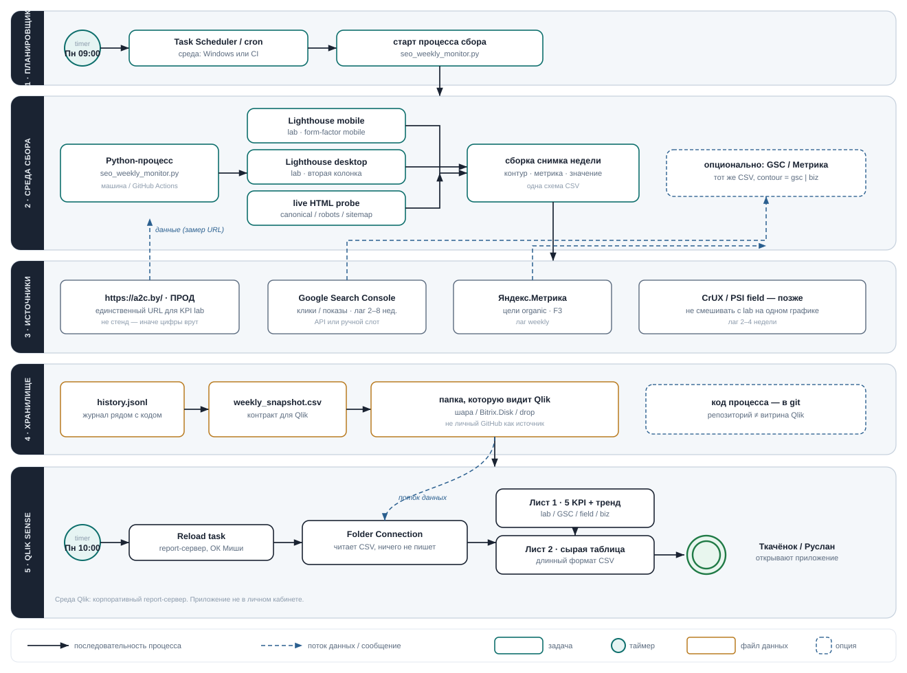

Пн 09:00
Планировщик в Windows (или CI) стартует процесс. Человек не открывает Lighthouse руками.
BPMN · среды · потоки данных
Пять пулов — пять сред. Сплошная стрелка: что за чем запускается. Пунктир: откуда цифра приходит. Qlik ничего не мерит — он читает снимок, который положил Python-процесс.
На узком экране схему можно прокрутить вправо.

Пример: Mobile LCP 3.7 с за 24.08. Так цифра проходит все пулы.
Планировщик в Windows (или CI) стартует процесс. Человек не открывает Lighthouse руками.
seo_weekly_monitor.py вызывает Lighthouse 12.2.1 против https://a2c.by/, mobile. Стенд не используется.
Строка CSV: date=2026-08-24, contour=lab, device=mobile, metric=lcp_s, value=3.7. Файл кладётся в папку, которую видит Qlik.
Reload + Folder Connection читают CSV. Лист 1 рисует KPI «Mobile LCP» и тренд. Лист 2 показывает ту же строку в таблице.
| Среда | Процесс | Пишет | Читает |
|---|---|---|---|
| Windows / CI | планировщик Пн 09:00 | — | расписание |
| та же машина | Python + Lighthouse | history.jsonl, weekly_snapshot.csv | прод a2c.by (HTTP) |
| шара / Bitrix.Disk | нет процесса, только файл | — | ждёт Qlik |
| Qlik report-сервер | Reload Пн 10:00 | кеш приложения | CSV через Folder Connection |
| браузер руководства | — | — | два листа приложения |
scripts/seo_weekly_monitor.py.
Не хватает экспорта CSV и папки (ОК Миши / Ругарина). Макет листов — раздел «Макет Qlik».
лист 1
Mobile Perf, LCP, TBT (lab LH 12.2.1). Слот: клики GSC. Конверсии organic. Ниже — позиции, Метрика/GA, индекс, Speed Index (без дубля Perf/LCP/TBT).
лист 2
Длинный формат: одна строка — одна метрика за дату. Это тот самый CSV, только глазами.
Эта схема + макет листов, письмо Мише про папку, A4 в работе.
Скрипт пишет CSV. Пробный reload на трёх датах lab.
Листы KPI + таблица в боевом Qlik.
Слоты GSC и Метрики. Field — когда накопится CrUX.